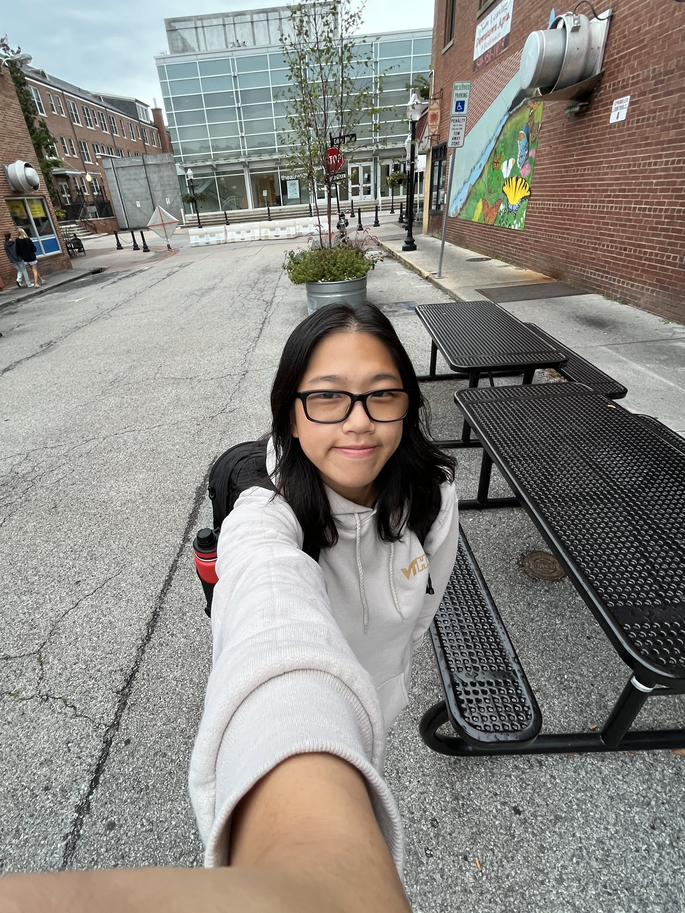

About Me
Hi! My name is Olivia Chan, and I am a junior at Virginia Tech. I am currently majoring in Computer Science with minors in Human Computer Interaction & Mathematics. My current interests revolve around frontend development, UI/UX, and understanding the importance between technology and a user. I think that as technology is developing, it is important that the interfaces and interactions that we have with them stay modernized because we want to be able to utilize the up and coming technology.
At Virginia Tech, I am a part of:
- Galipatia Living Learning Community: Galipatia Leadership Team
- Club Jump Rope at Virginia Tech: Co-President
- Association for Women in Computing: Public Relations Chair
- VTHacks: UX Organizer
- Dean's Team
- SASE (Society of Asian Scientists and Engineers)
I really enjoy being a part of these organizations as it allows me to focus on different leadership skills. Additionally, I love being involved at Virginia Tech to broaden my scope of information that pertains to engineering and to the university as a whole.
